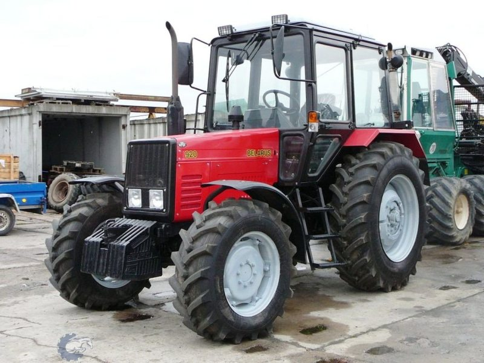

МТЗ Беларус 920

МТЗ Беларус 920 – це вдосконалена модифікація універсально-просапного трактора, яка базується на конструкції 82-ї моделі, але пропонує вищий рівень комфорту та покращені технічні характеристики. Модель 920 часто обирають господарства, де потрібна перевірена база МТЗ, але з більш сучасним підходом до управління та дизайну.
Ключовою відмінністю Беларус 920 є встановлення синхронізованої коробки передач та оновленої трансмісії, що забезпечує значно плавніше перемикання швидкостей і зручність при транспортних роботах. Трактор має повний привід та зазвичай комплектується переднім ведучим мостом портального або балочного типу, що покращує тягові властивості.
| Параметр | Значення |
|---|---|
| Клас тяги | 1.4 |
| Тип ходової частини | колісний |
| Колісна формула | 4х4 (повний привід) |
| Тип рами | напіврамна конструкція |
| Основне призначення | підготовка ґрунту під посів, збирання врожаю, транспортні та комунальні роботи |
| Параметр | Значення |
|---|---|
| Модель | Д-243 (ММЗ) |
| Тип двигуна | 4-циліндровий, дизельний, атмосферний |
| Спосіб охолодження | рідинне |
| Розташування циліндрів | рядне, вертикальне |
| Робочий об’єм | 4,75 л |
| Номінальна потужність | 60 кВт (81 к.с.) |
| Номінальні оберти | 2200 об/хв |
| Максимальний крутний момент | 298 Н·м |
| Питома витрата палива | ~226 г/кВт·год |
| Параметр | Значення |
|---|---|
| Муфта зчеплення | суха, однодискова, постійно замкнута |
| Тип КПП | механічна, синхронізована (7-ступінчаста з редуктором) |
| Кількість передач | 14 вперед / 4 назад |
| Тип реверсу | механічний |
| Діапазон швидкостей (вперед) | 2,5 – 34,3 км/год |
| Вал відбору потужності | незалежний двошвидкісний (540 / 1000 об/хв) |
| Діапазон | Передача | Теоретична швидкість, км/год | Передаточне число (загальне) | Тягове зусилля, кН |
|---|---|---|---|---|
| Знижені передачі | 1 | 2,50 | 181,8 | 16,50* |
| Знижені передачі | 2 | 4,20 | 108,2 | 16,50* |
| Знижені передачі | 3 | 7,00 | 64,9 | 15,20 |
| Знижені передачі | 4 | 8,90 | 51,0 | 11,85 |
| Знижені передачі | 5 | 10,20 | 44,5 | 10,35 |
| Знижені передачі | 6 | 12,10 | 37,5 | 8,75 |
| Знижені передачі | 7 | 15,10 | 30,1 | 7,05 |
| Підвищені передачі | 1 | 8,20 | 55,4 | 12,90 |
| Підвищені передачі | 2 | 11,40 | 39,8 | 9,25 |
| Підвищені передачі | 3 | 13,30 | 34,1 | 8,00 |
| Підвищені передачі | 4 | 17,50 | 25,9 | 6,10 |
| Підвищені передачі | 5 | 21,50 | 21,1 | 5,00 |
| Підвищені передачі | 6 | 25,90 | 17,5 | 4,10 |
| Підвищені передачі | 7 | 34,30 | 13,2 | 3,10 |
| Параметр | Значення |
|---|---|
| Тип коліс | пневматичні шини |
| Шини передні | 13.6 - 20 |
| Шини задні | 16.9 R38 |
| Радіус ведучого колеса (зад) | ~0,82 м |
| Колія передніх коліс | 1450 – 1970 мм |
| Колія задніх коліс | 1500 – 2100 мм |
| Кліренс (просвіт) | 490 мм |
| Рульове управління | гідрооб'ємне (ГОРУ) |
| Блокування диференціалу | гідравлічне з електронікою |
| Параметр | Значення |
|---|---|
| Під час роботи з навантаженням | 13,5 – 15,2 кг/год |
| Під час холостих переїздів | 6,2 – 7,6 кг/год |
| Під час зупинок (холостий хід) | 0,9 – 1,1 кг/год |
| Параметр | Значення |
|---|---|
| Вага (експлуатаційна) | 4100 кг |
| Максимальна допустима вага | 7000 кг |
| Довжина / Ширина / Висота | 4000 / 2000 / 2850 мм |
| Об’єм паливного баку | 130 л |
| Параметр | Значення |
|---|---|
| Гідравлічна система | роздільно-агрегатна, 45 л/хв |
| Вантажопідйомність навіски | 3200 кг |
| Особливості моделі | оновлений дизайн кабіни та капота, посилений передній міст балкового або портального типу (залежно від комплектації) |